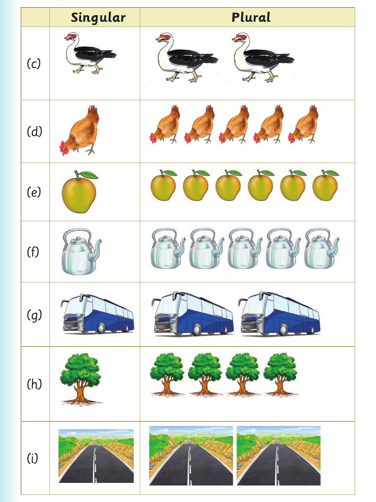

Objects in other environments - continued

Row C. A picture of one duck; A picture of two ducks. Row D. A picture of one chicken; A picture of five chickens. Row E. A picture of one mango; A picture of six mangoes. Row F. A picture of one kettle; A picture of five kettles. Row G. A picture of one bus; A picture of two buses. Row H. A picture of one tree; A picture of four trees. Row I. A picture of one road; A picture of two roads.